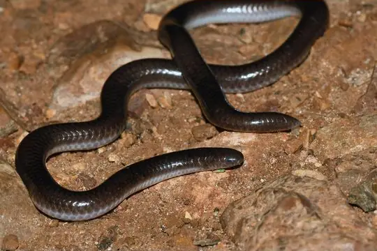
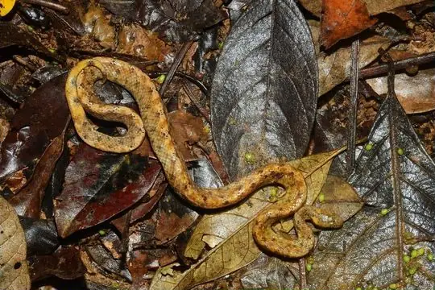
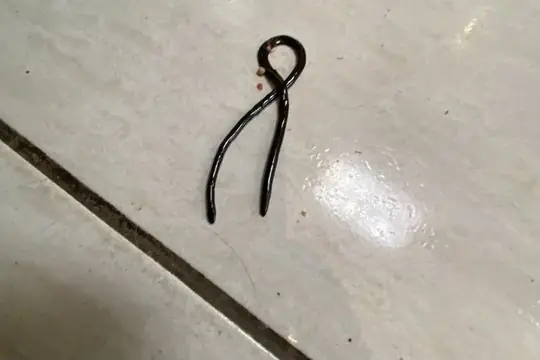
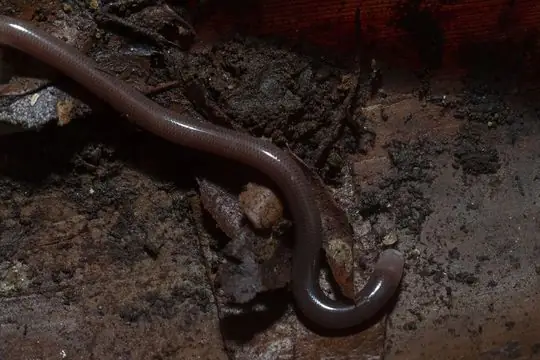
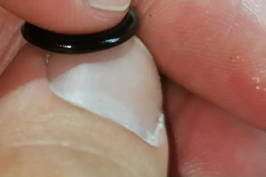
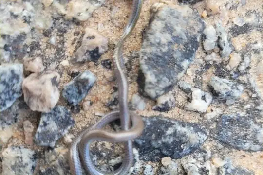
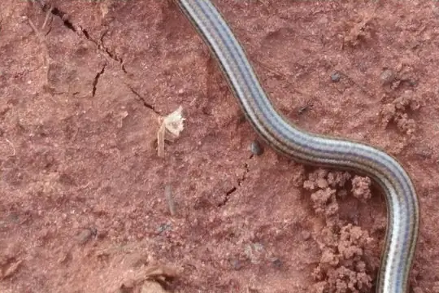
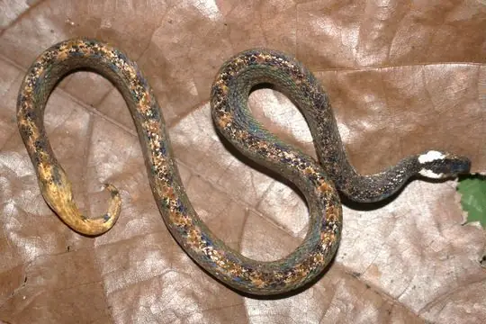

Snakes of Brazil
427 snake species are recorded in Brazil in SnakeList: 77 venomous and 350 non-venomous, from 10 families.
- 427species
- 77venomous
- 350non-venomous
- 10families
These totals count the snakes SnakeList records as living in Brazil. A species counts if it is recorded anywhere in the country, so not every snake lives in every region.
Species
Showing 427 species
 Aesculapian False Coral SnakeErythrolamprus aesculapii
Aesculapian False Coral SnakeErythrolamprus aesculapii- No photo yetAlagoas Blind SnakeLiotyphlops trefauti
 Albuquerque Ground SnakeAtractus albuquerquei
Albuquerque Ground SnakeAtractus albuquerquei Alcatrazes LanceheadBothrops alcatraz
Alcatrazes LanceheadBothrops alcatraz Almaden Ground SnakeErythrolamprus almadensis
Almaden Ground SnakeErythrolamprus almadensis- No photo yetAlphonse's Ground SnakeAtractus alphonsehogei
 Amaral's Blind SnakeTrilepida koppesi
Amaral's Blind SnakeTrilepida koppesi- No photo yetAmaral's Ground SnakeCaaeteboia amarali
 Amazon Banded SnakeRhinobothryum lentiginosum
Amazon Banded SnakeRhinobothryum lentiginosum Amazon Basin Tree SnakeImantodes lentiferus
Amazon Basin Tree SnakeImantodes lentiferus Amazon Coastal House SnakeThamnodynastes pallidus
Amazon Coastal House SnakeThamnodynastes pallidus Amazon Coral SnakeMicrurus spixii
Amazon Coral SnakeMicrurus spixii Amazon False Coral SnakeOxyrhopus rhombifer
Amazon False Coral SnakeOxyrhopus rhombifer Amazon False Fer-de-lanceXenodon severus
Amazon False Fer-de-lanceXenodon severus Amazon Puffing SnakeSpilotes sulphureus
Amazon Puffing SnakeSpilotes sulphureus Amazon Tree BoaCorallus hortulana
Amazon Tree BoaCorallus hortulana Amazon Tropical Forest SnakeErythrolamprus pygmaeus
Amazon Tropical Forest SnakeErythrolamprus pygmaeus Amazon Water SnakeHydrops martii
Amazon Water SnakeHydrops martii Annellated Coral SnakeMicrurus annellatus
Annellated Coral SnakeMicrurus annellatus Apiaká KeelbackHelicops apiaka
Apiaká KeelbackHelicops apiaka Aquatic Coral SnakeMicrurus surinamensis
Aquatic Coral SnakeMicrurus surinamensis Argentine Pampas SnakePhimophis guerini
Argentine Pampas SnakePhimophis guerini Argentinian Coral SnakeMicrurus pyrrhocryptus
Argentinian Coral SnakeMicrurus pyrrhocryptus Arnaldo's Green RacerPhilodryas arnaldoi
Arnaldo's Green RacerPhilodryas arnaldoi Ashmead's Banded Cat-eyed SnakeLeptodeira ashmeadii
Ashmead's Banded Cat-eyed SnakeLeptodeira ashmeadii Atlantic Forest RacerDendrophidion atlantica
Atlantic Forest RacerDendrophidion atlantica Atlantic Forest Snail-eaterDipsas sazimai
Atlantic Forest Snail-eaterDipsas sazimai- No photo yetBahia Black-naped SnakeAmnesteophis melanauchen
 Banded Cat-eyed Snake (annulata)Leptodeira annulata
Banded Cat-eyed Snake (annulata)Leptodeira annulata Banded Hognose SnakeXenodon pulcher
Banded Hognose SnakeXenodon pulcher Basin Ground SnakeAtractus poeppigi
Basin Ground SnakeAtractus poeppigi- No photo yetBasin Worm SnakeAmerotyphlops minuisquamus
 Bates' Tree BoaCorallus batesii
Bates' Tree BoaCorallus batesii- No photo yetBeaked BlackheadApostolepis vittata
 Beautiful calico snakeOxyrhopus formosus
Beautiful calico snakeOxyrhopus formosus Big Ground SnakeAtractus major
Big Ground SnakeAtractus major Big-scaled Blind SnakeTrilepida macrolepis
Big-scaled Blind SnakeTrilepida macrolepis Black False BoaPseudoboa nigra
Black False BoaPseudoboa nigra Black Ground SnakeAtractus elaps
Black Ground SnakeAtractus elaps Black-collared SnakeDrepanoides anomalus
Black-collared SnakeDrepanoides anomalus Black-headed Coral SnakeMicrurus averyi
Black-headed Coral SnakeMicrurus averyi Blue Flanked Leaf Litter SnakeEchinanthera cyanopleura
Blue Flanked Leaf Litter SnakeEchinanthera cyanopleura Boa ConstrictorBoa constrictor
Boa ConstrictorBoa constrictor Boddaert's Tropical RacerMastigodryas boddaerti
Boddaert's Tropical RacerMastigodryas boddaerti Boettger's SipoChironius flavolineatus
Boettger's SipoChironius flavolineatus Boicora Coral SnakeMicrurus boicora
Boicora Coral SnakeMicrurus boicora Boie's Ground SnakeAtractus badius
Boie's Ground SnakeAtractus badius Bolivian Coral Snake (obscurus)Micrurus obscurus
Bolivian Coral Snake (obscurus)Micrurus obscurus Bolivian Tree SnakeDipsas turgida
Bolivian Tree SnakeDipsas turgida- No photo yetBorrelli's Burrowing SnakeApostolepis borellii
 Boulenger's Tree SnakeDipsas ventrimaculata
Boulenger's Tree SnakeDipsas ventrimaculata Brazil's LanceheadBothrops brazili
Brazil's LanceheadBothrops brazili Brazil's Lancehead (oligobalius)Bothrops oligobalius
Brazil's Lancehead (oligobalius)Bothrops oligobalius Brazilian Bird SnakeRhachidelus brazili
Brazilian Bird SnakeRhachidelus brazili
Brazilian Blind SnakeTrilepida brasiliensis Brazilian Burrowing SnakeGomesophis brasiliensis
Brazilian Burrowing SnakeGomesophis brasiliensis Brazilian Coral SnakeMicrurus decoratus
Brazilian Coral SnakeMicrurus decoratus Brazilian coralsnakeMicrurus brasiliensis
Brazilian coralsnakeMicrurus brasiliensis
Brazilian Dwarf BoaTropidophis paucisquamis Brazilian False Coral SnakeOxyrhopus trigeminus
Brazilian False Coral SnakeOxyrhopus trigeminus Brazilian Green RacerPhilodryas aestiva
Brazilian Green RacerPhilodryas aestiva Brazilian KeelbackHelicops infrataeniatus
Brazilian KeelbackHelicops infrataeniatus Brazilian LanceheadBothrops moojeni
Brazilian LanceheadBothrops moojeni Brazilian MussuranaMussurana quimi
Brazilian MussuranaMussurana quimi Brazilian SipoChironius laevicollis
Brazilian SipoChironius laevicollis Brazilian Snail EaterDipsas mikanii
Brazilian Snail EaterDipsas mikanii Brazilian Spotted Night SnakeSiphlophis longicaudatus
Brazilian Spotted Night SnakeSiphlophis longicaudatus Brazilian Woodland RacerDrymoluber brazili
Brazilian Woodland RacerDrymoluber brazili Broadhead Ground SnakeAtractus latifrons
Broadhead Ground SnakeAtractus latifrons Brongersma's Worm SnakeAmerotyphlops brongersmianus
Brongersma's Worm SnakeAmerotyphlops brongersmianus Brown Rainbow BoaEpicrates maurus
Brown Rainbow BoaEpicrates maurus Brown SipoChironius fuscus
Brown SipoChironius fuscus Brown VinesnakeOxybelis aeneus
Brown VinesnakeOxybelis aeneus Burrowing Night SnakePhilodryas agassizii
Burrowing Night SnakePhilodryas agassizii BushmasterLachesis muta
BushmasterLachesis muta Caatinga Coral SnakeMicrurus ibiboboca
Caatinga Coral SnakeMicrurus ibiboboca Caatinga LanceheadBothrops erythromelas
Caatinga LanceheadBothrops erythromelas Campina Grande Rainbow BoaEpicrates assisi
Campina Grande Rainbow BoaEpicrates assisi Carib Coral SnakeMicrurus psyches
Carib Coral SnakeMicrurus psyches Cascabel RattlesnakeCrotalus durissus
Cascabel RattlesnakeCrotalus durissus Catesby's Snail-eaterDipsas catesbyi
Catesby's Snail-eaterDipsas catesbyi Central Burrowing SnakeApostolepis flavotorquata
Central Burrowing SnakeApostolepis flavotorquata Central Sipo (maculoventris)Chironius maculoventris
Central Sipo (maculoventris)Chironius maculoventris Central Sipo (quadricarinatus)Chironius quadricarinatus
Central Sipo (quadricarinatus)Chironius quadricarinatus Cerrado BlackheadApostolepis albicollaris
Cerrado BlackheadApostolepis albicollaris Cerrado Lancehead (pauloensis)Bothrops pauloensis
Cerrado Lancehead (pauloensis)Bothrops pauloensis Cerrado RacerPhilodryas livida
Cerrado RacerPhilodryas livida Chapada Diamantina SipoChironius diamantina
Chapada Diamantina SipoChironius diamantina Christine's BlackheadApostolepis christineae
Christine's BlackheadApostolepis christineae Coal SnakePseudoboa neuwiedii
Coal SnakePseudoboa neuwiedii- No photo yetCoastal House Snake (strigatus)Thamnodynastes strigatus
 Collared Blind SnakeHabrophallos collaris
Collared Blind SnakeHabrophallos collaris Collared Ground SnakeAtractus collaris
Collared Ground SnakeAtractus collaris Common bilineate BlackheadApostolepis dimidiata
Common bilineate BlackheadApostolepis dimidiata Common Green RacerChlorosoma viridissimum
Common Green RacerChlorosoma viridissimum Common Peru Blind SnakeEpictia diaplocia
Common Peru Blind SnakeEpictia diaplocia Common Spotted Night SnakeSiphlophis leucocephalus
Common Spotted Night SnakeSiphlophis leucocephalus Cope's Snail-eaterDipsas copei
Cope's Snail-eaterDipsas copei Coral Cylinder SnakesAnilius scytale
Coral Cylinder SnakesAnilius scytale CotiaraBothrops cotiara
CotiaraBothrops cotiara Cropani's BoaCorallus cropanii
Cropani's BoaCorallus cropanii Crown Ground SnakeErythrolamprus viridis
Crown Ground SnakeErythrolamprus viridis Crowned False BoaPseudoboa coronata
Crowned False BoaPseudoboa coronata CulebraParaphimophis rusticus
CulebraParaphimophis rusticus Dainty Blind SnakeTrilepida dimidiata
Dainty Blind SnakeTrilepida dimidiata Dark Spotted AnacondaEunectes deschauenseei
Dark Spotted AnacondaEunectes deschauenseei De Lema's Ground SnakeApostolepis thalesdelemai
De Lema's Ground SnakeApostolepis thalesdelemai Diana's Coral SnakeMicrurus diana
Diana's Coral SnakeMicrurus diana Diurnal Vine SnakeXenoxybelis argenteus
Diurnal Vine SnakeXenoxybelis argenteus Dixon's Ground SnakeErythrolamprus atraventer
Dixon's Ground SnakeErythrolamprus atraventer Dotted Brown SnakeSordellina punctata
Dotted Brown SnakeSordellina punctata Dumeril's Diadem SnakePhalotris lemniscatus
Dumeril's Diadem SnakePhalotris lemniscatus Duméril's False Coral SnakeOxyrhopus clathratus
Duméril's False Coral SnakeOxyrhopus clathratus Eastern Rainbow BoaEpicrates crassus
Eastern Rainbow BoaEpicrates crassus Emerald Tree BoaCorallus caninus
Emerald Tree BoaCorallus caninus Equatorial KeelbackHelicops trivittatus
Equatorial KeelbackHelicops trivittatus Espiritú Santo Blind SnakeTrilepida salgueiroi
Espiritú Santo Blind SnakeTrilepida salgueiroi False Water CobraHydrodynastes gigas
False Water CobraHydrodynastes gigas Fanged Water SnakePtychophis flavovirgatus
Fanged Water SnakePtychophis flavovirgatus Fer-de-LanceBothrops atrox
Fer-de-LanceBothrops atrox Fiddle-string SnakeImantodes cenchoa
Fiddle-string SnakeImantodes cenchoa Flaming Ground SnakeAtractus flammigerus
Flaming Ground SnakeAtractus flammigerus Fonseca's LanceheadBothrops fonsecai
Fonseca's LanceheadBothrops fonsecai- No photo yetFranceses island-LanceheadBothrops sazimai
 Freiberg's Blind SnakeEpictia australis
Freiberg's Blind SnakeEpictia australis Frog-eater SnakeEchinanthera undulata
Frog-eater SnakeEchinanthera undulata Fronted Ground SnakeLygophis flavifrenatus
Fronted Ground SnakeLygophis flavifrenatus- No photo yetGoias Burrowing SnakeApostolepis goiasensis
 Golden LanceheadBothrops insularis
Golden LanceheadBothrops insularis Golden LiophisErythrolamprus semiaureus
Golden LiophisErythrolamprus semiaureus Golden-belly snakeLygophis anomalus
Golden-belly snakeLygophis anomalus Gomes' Burrowing SnakeApostolepis cearensis
Gomes' Burrowing SnakeApostolepis cearensis Gomes' Pampas SnakeRodriguesophis iglesiasi
Gomes' Pampas SnakeRodriguesophis iglesiasi Green AnacondaEunectes murinus
Green AnacondaEunectes murinus Green JararacaBothrops bilineatus
Green JararacaBothrops bilineatus Guanabara Spotted Night SnakeSiphlophis pulcher
Guanabara Spotted Night SnakeSiphlophis pulcher Guianan Green SnakeXenodon werneri
Guianan Green SnakeXenodon werneri Guibe's Flame SnakeOxyrhopus guibei
Guibe's Flame SnakeOxyrhopus guibei Guyana Blind SnakeEpictia tenella
Guyana Blind SnakeEpictia tenella Günther's False Fer-de-lanceXenodon guentheri
Günther's False Fer-de-lanceXenodon guentheri Günther's Green RacerPhilodryas psammophidea
Günther's Green RacerPhilodryas psammophidea Günther's Ground SnakeAtractus guentheri
Günther's Ground SnakeAtractus guentheri Hagmann's KeelbackHelicops hagmanni
Hagmann's KeelbackHelicops hagmanni Hawbeack BlackheadApostolepis polylepis
Hawbeack BlackheadApostolepis polylepis Head-striped Leaf-litter SnakeEchinanthera cephalostriata
Head-striped Leaf-litter SnakeEchinanthera cephalostriata Hemprich's Coral SnakeMicrurus hemprichii
Hemprich's Coral SnakeMicrurus hemprichii- No photo yetHensel's SnakeDitaxodon taeniatus
 Herrmann's Water SnakeHydrodynastes bicinctus
Herrmann's Water SnakeHydrodynastes bicinctus Hoge's Ground SnakeLygophis paucidens
Hoge's Ground SnakeLygophis paucidens Hognose LanceheadBothrocophias hyoprora
Hognose LanceheadBothrocophias hyoprora- No photo yetHognose Lineate BlackheadApostolepis lineata
 Hudson's Coffee SnakeNinia hudsoni
Hudson's Coffee SnakeNinia hudsoni- No photo yetIhering's SnakeLioheterophis iheringi
 Impostor Flame-SnakeOxyrhopus vanidicus
Impostor Flame-SnakeOxyrhopus vanidicus Indigo SnakeDrymarchon corais
Indigo SnakeDrymarchon corais Jabre’s LanceheadBothrops jabrensis
Jabre’s LanceheadBothrops jabrensis Jaeger's Ground SnakeErythrolamprus jaegeri
Jaeger's Ground SnakeErythrolamprus jaegeri- No photo yetJan's Hognose SnakeXenodon histricus
 Jan's Snail-eater (alternans)Dipsas alternans
Jan's Snail-eater (alternans)Dipsas alternans JararacaBothrops jararaca
JararacaBothrops jararaca Jararaca PintadaBothrops neuwiedi
Jararaca PintadaBothrops neuwiedi JararacussuBothrops jararacussu
JararacussuBothrops jararacussu Jensen's Ground SnakeXenopholis undulatus
Jensen's Ground SnakeXenopholis undulatus JiboinhaTropidodryas striaticeps
JiboinhaTropidodryas striaticeps La Villa's Snail-eaterDipsas lavillai
La Villa's Snail-eaterDipsas lavillai Langsdorff's Coral SnakeMicrurus langsdorffi
Langsdorff's Coral SnakeMicrurus langsdorffi Lema's Ground SnakeLygophis dilepis
Lema's Ground SnakeLygophis dilepis Leopard KeelbackHelicops leopardinus
Leopard KeelbackHelicops leopardinus Lichtenstein's Green RacerPhilodryas olfersii
Lichtenstein's Green RacerPhilodryas olfersii Lined Ground SnakeLygophis lineatus
Lined Ground SnakeLygophis lineatus Linnaeus' SipoChironius exoletus
Linnaeus' SipoChironius exoletus Lip-spotted Collared SnakePhalotris labiomaculatus
Lip-spotted Collared SnakePhalotris labiomaculatus Longhead Burrowing SnakeApostolepis longicaudata
Longhead Burrowing SnakeApostolepis longicaudata Lutz's Cerrado LanceheadBothrops lutzi
Lutz's Cerrado LanceheadBothrops lutzi Mangrove SnakErythrolamprus cobella
Mangrove SnakErythrolamprus cobella Marajó LanceheadBothrops marajoensis
Marajó LanceheadBothrops marajoensis Marbled LanceheadBothrops marmoratus
Marbled LanceheadBothrops marmoratus Maryellen's Ground SnakeErythrolamprus maryellenae
Maryellen's Ground SnakeErythrolamprus maryellenae Mato Grosso Blind Snake (cupinensis)Siagonodon cupinensis
Mato Grosso Blind Snake (cupinensis)Siagonodon cupinensis Mato Grosso Burrowing SnakePhalotris matogrossensis
Mato Grosso Burrowing SnakePhalotris matogrossensis Mato Grosso Burrowing Snake (intermedia)Apostolepis intermedia
Mato Grosso Burrowing Snake (intermedia)Apostolepis intermedia- No photo yetMato Grosso Burrowing Snake (serrana)Apostolepis serrana
 Mato Grosso Hognose SnakeXenodon matogrossensis
Mato Grosso Hognose SnakeXenodon matogrossensis Mato Grosso LanceheadBothrops mattogrossensis
Mato Grosso LanceheadBothrops mattogrossensis Military Ground SnakeErythrolamprus miliaris
Military Ground SnakeErythrolamprus miliaris Minacu BlackheadApostolepis nelsonjorgei
Minacu BlackheadApostolepis nelsonjorgei Minas Gerais SnakeCoronelaps lepidus
Minas Gerais SnakeCoronelaps lepidus Miranda Green Racer (mattogrossensis)Philodryas mattogrossensis
Miranda Green Racer (mattogrossensis)Philodryas mattogrossensis- No photo yetMisiones BlackheadApostolepis quirogai
- No photo yetMoela’s lanceheadBothrops germanoi
 Mossoro Smooth SnakeErythrolamprus mossoroensis
Mossoro Smooth SnakeErythrolamprus mossoroensis Mountain KeelbackHelicops angulatus
Mountain KeelbackHelicops angulatus Mud Snake (caesurus)Hydrops caesurus
Mud Snake (caesurus)Hydrops caesurus Murici LanceheadBothrops muriciensis
Murici LanceheadBothrops muriciensis Mussurana (maculata)Boiruna maculata
Mussurana (maculata)Boiruna maculata Natterer's Coral SnakeMicrurus nattereri
Natterer's Coral SnakeMicrurus nattereri Natterer's Hognose SnakeXenodon nattereri
Natterer's Hognose SnakeXenodon nattereri- No photo yetNeblina coralsnakeMicrurus remotus
 Neckband Ground SnakeAtractus torquatus
Neckband Ground SnakeAtractus torquatus Neotropical Snail-eater (bucephala)Dipsas bucephala
Neotropical Snail-eater (bucephala)Dipsas bucephala Neotropical Snail-eater (indica)Dipsas indica
Neotropical Snail-eater (indica)Dipsas indica Neuwied's False Fer-de-lanceXenodon neuwiedii
Neuwied's False Fer-de-lanceXenodon neuwiedii Neuwied's Tree SnakeDipsas neuwiedi
Neuwied's Tree SnakeDipsas neuwiedi Norman's KeelbackHelicops polylepis
Norman's KeelbackHelicops polylepis- No photo yetNortheastern Puffing SnakePhrynonax polylepis
 Northern Calico SnakeOxyrhopus occipitalis
Northern Calico SnakeOxyrhopus occipitalis Northern Snail-eaterDipsas pavonina
Northern Snail-eaterDipsas pavonina Northern Woodland RacerDrymoluber dichrous
Northern Woodland RacerDrymoluber dichrous- No photo yetOcellated Pampas SnakeTomodon ocellatus
 Olive KeelbackHelicops modestus
Olive KeelbackHelicops modestus- No photo yetOueimadas BlackheadApostolepis gaboi
- No photo yetPacaraima coral snakeMicrurus pacaraimae
 Pachacamac Ground SnakeAtractus snethlageae
Pachacamac Ground SnakeAtractus snethlageae Painted Coral SnakeMicrurus corallinus
Painted Coral SnakeMicrurus corallinus Painted LanceheadBothrops diporus
Painted LanceheadBothrops diporus Pale Collared Scarlet SnakePseudoboa martinsi
Pale Collared Scarlet SnakePseudoboa martinsi Pampas LanceheadBothrops pubescens
Pampas LanceheadBothrops pubescens Pampas SnakeTomodon dorsatus
Pampas SnakeTomodon dorsatus Panama Spotted Night SnakeSiphlophis cervinus
Panama Spotted Night SnakeSiphlophis cervinus Pantanal Coral SnakeMicrurus tricolor
Pantanal Coral SnakeMicrurus tricolor Pantanal ThreadsnakeEpictia vellardi
Pantanal ThreadsnakeEpictia vellardi Paraguay Green RacerPhilodryas nattereri
Paraguay Green RacerPhilodryas nattereri Paraguayan Ground SnakeAtractus paraguayensis
Paraguayan Ground SnakeAtractus paraguayensis Paraná False BoaPseudoboa haasi
Paraná False BoaPseudoboa haasi- No photo yetParaná Forest SnakeCalamodontophis ronaldoi
 Parrot SnakeLeptophis ahaetulla
Parrot SnakeLeptophis ahaetulla Pará BlackheadApostolepis nigrolineata
Pará BlackheadApostolepis nigrolineata Pará Coral SnakeMicrurus paraensis
Pará Coral SnakeMicrurus paraensis Patagonia Green RacerPhilodryas patagoniensis
Patagonia Green RacerPhilodryas patagoniensis Pernambuco Worm SnakeAmerotyphlops paucisquamus
Pernambuco Worm SnakeAmerotyphlops paucisquamus Peru Burrowing SnakeApostolepis nigroterminata
Peru Burrowing SnakeApostolepis nigroterminata Peru KeelbackHelicops yacu
Peru KeelbackHelicops yacu Piraja's LanceheadBothrops pirajai
Piraja's LanceheadBothrops pirajai Plee's Tropical RacerMastigodryas pleii
Plee's Tropical RacerMastigodryas pleii Plumbeous MussuranaClelia plumbea
Plumbeous MussuranaClelia plumbea Pointed Ground SnakeAtractus punctiventris
Pointed Ground SnakeAtractus punctiventris Potyguara Coral SnakeMicrurus potyguara
Potyguara Coral SnakeMicrurus potyguara- No photo yetPrado's Coastal House SnakeThamnodynastes rutilus
 Putumayo Coral SnakeMicrurus putumayensis
Putumayo Coral SnakeMicrurus putumayensis Raddi's Lizard-eating SnakeElapomorphus quinquelineatus
Raddi's Lizard-eating SnakeElapomorphus quinquelineatus Rainbow BoaEpicrates cenchria
Rainbow BoaEpicrates cenchria Redtail Coral SnakeMicrurus mipartitus
Redtail Coral SnakeMicrurus mipartitus Reinhardt's Burrowing SnakeApostolepis assimilis
Reinhardt's Burrowing SnakeApostolepis assimilis Reticulate Ground SnakeAtractus reticulatus
Reticulate Ground SnakeAtractus reticulatus Ringed Snail SuckerSibon annulatus
Ringed Snail SuckerSibon annulatus Rio Grande do Sul Blind SnakeEpictia munoai
Rio Grande do Sul Blind SnakeEpictia munoai Rio Tropical RacerPalusophis bifossatus
Rio Tropical RacerPalusophis bifossatus- No photo yetRivero's Ground SnakeAtractus riveroi
- No photo yetRondonia BlackheadApostolepis striata
 Royal Ground SnakeErythrolamprus reginae
Royal Ground SnakeErythrolamprus reginae- No photo yetRuthven's Burrowing SnakeApostolepis tenuis
- No photo yetSand dunes BlackheadApostolepis arenaria

Sao Paulo Blind SnakeLiotyphlops schubarti Sao Paulo False Coral SnakeSimophis rhinostoma
Sao Paulo False Coral SnakeSimophis rhinostoma- No photo yetSao Paulo Ground SnakeAtractus serranus
 Sao Paulo KeelbackHelicops gomesi
Sao Paulo KeelbackHelicops gomesi Sao Paulo LanceheadBothrops itapetiningae
Sao Paulo LanceheadBothrops itapetiningae- No photo yetSao Paulo Sharp SnakeUromacerina ricardinii
 Sauvage's Snail-eaterDipsas albifrons
Sauvage's Snail-eaterDipsas albifrons Savannah RacerErythrolamprus aenigma
Savannah RacerErythrolamprus aenigma Schach's Ground SnakeAtractus schach
Schach's Ground SnakeAtractus schach Schlegel's Golden SnakeCercophis auratus
Schlegel's Golden SnakeCercophis auratus- No photo yetSerra do Cariri Snail EaterDipsas bothropoides
 Serra SnakeTropidodryas serra
Serra SnakeTropidodryas serra Seven-striped Blind SnakeSiagonodon septemstriatus
Seven-striped Blind SnakeSiagonodon septemstriatus Short Ground SnakeErythrolamprus breviceps
Short Ground SnakeErythrolamprus breviceps Short-nosed GroundsnakeTaeniophallus brevirostris
Short-nosed GroundsnakeTaeniophallus brevirostris Silvia coralsnakeMicrurus silviae
Silvia coralsnakeMicrurus silviae Sipo (carinatus)Chironius carinatus
Sipo (carinatus)Chironius carinatus Slender Coral SnakeMicrurus filiformis
Slender Coral SnakeMicrurus filiformis Small-eyed ToadheadBothrocophias microphthalmus
Small-eyed ToadheadBothrocophias microphthalmus South American Coral SnakeMicrurus lemniscatus
South American Coral SnakeMicrurus lemniscatus South American Hognose SnakeXenodon dorbignyi
South American Hognose SnakeXenodon dorbignyi South American Pond Snake (plicatilis)Pseudoeryx plicatilis
South American Pond Snake (plicatilis)Pseudoeryx plicatilis South American Sipo (foveatus)Chironius foveatus
South American Sipo (foveatus)Chironius foveatus South American Sipo (multiventris)Chironius multiventris
South American Sipo (multiventris)Chironius multiventris South American Sipo (septentrionalis)Chironius septentrionalis
South American Sipo (septentrionalis)Chironius septentrionalis Southeast Brazilian SipoChironius brazili
Southeast Brazilian SipoChironius brazili Southeastern Scarlet SnakePseudoboa serrana
Southeastern Scarlet SnakePseudoboa serrana Southern Coral SnakeMicrurus frontalis
Southern Coral SnakeMicrurus frontalis Southern Ground SnakeAtractus trihedrurus
Southern Ground SnakeAtractus trihedrurus Southern Reticulated Collared SnakePhalotris reticulatus
Southern Reticulated Collared SnakePhalotris reticulatus Southern Sharpnose SnakeXenoxybelis boulengeri
Southern Sharpnose SnakeXenoxybelis boulengeri Southern Striped SnakeLygophis meridionalis
Southern Striped SnakeLygophis meridionalis Speckled Forest Pit ViperBothrops taeniatus
Speckled Forest Pit ViperBothrops taeniatus Spirit Ground SnakePsomophis genimaculatus
Spirit Ground SnakePsomophis genimaculatus Spotted Ground SnakeAtractus maculatus
Spotted Ground SnakeAtractus maculatus Steinbach's SnakeBaliodryas steinbachi
Steinbach's SnakeBaliodryas steinbachi- No photo yetSwamp KeelbackHelicops nentur
 Swamp LiophisErythrolamprus frenatus
Swamp LiophisErythrolamprus frenatus São Paulo Reticulated Collared SnakePhalotris mertensi
São Paulo Reticulated Collared SnakePhalotris mertensi- No photo yetSão Salvador burrow-snakeApostolepis adhara

São Sebastião Blind SnakeLiotyphlops caissara Tapajós KeelbackHelicops tapajonicus
Tapajós KeelbackHelicops tapajonicus- No photo yetTaylor's Mato Grosso Blind SnakeLiotyphlops taylori
 Ternetz's Blind SnakeLiotyphlops ternetzii
Ternetz's Blind SnakeLiotyphlops ternetzii- No photo yetThales De Lema's Tellurian SnakeAtractus thalesdelemai
 Three-lined Ground SnakeAtractus trilineatus
Three-lined Ground SnakeAtractus trilineatus Tikuna coralsnakeMicrurus tikuna
Tikuna coralsnakeMicrurus tikuna Tocantins BlackheadApostolepis sanctaeritae
Tocantins BlackheadApostolepis sanctaeritae Triangle Water SnakeHydrops triangularis
Triangle Water SnakeHydrops triangularis Tricolored Burrowing SnakePhalotris tricolor
Tricolored Burrowing SnakePhalotris tricolor Trinidad Blind SnakeTyphlophis squamosus
Trinidad Blind SnakeTyphlophis squamosus Trinidad coralsnakeMicrurus diutius
Trinidad coralsnakeMicrurus diutius Tropical Flat SnakeSiphlophis compressus
Tropical Flat SnakeSiphlophis compressus Tropical Forest SnakeCalamodontophis paucidens
Tropical Forest SnakeCalamodontophis paucidens Troschel's Pampas SnakePhimophis guianensis
Troschel's Pampas SnakePhimophis guianensis Tschudi's False Coral SnakeOxyrhopus melanogenys
Tschudi's False Coral SnakeOxyrhopus melanogenys Tucuman ThreadsnakeEpictia albipuncta
Tucuman ThreadsnakeEpictia albipuncta Two-colored MussuranaMussurana bicolor
Two-colored MussuranaMussurana bicolor Two-headed SipoChironius bicarinatus
Two-headed SipoChironius bicarinatus Uruguayan coralsnakeMicrurus altirostris
Uruguayan coralsnakeMicrurus altirostris Uruguayan SipoChironius gouveai
Uruguayan SipoChironius gouveai UrutuBothrops alternatus
UrutuBothrops alternatus Variegated Snail-eaterDipsas variegata
Variegated Snail-eaterDipsas variegata Velasco BlackheadApostolepis phillipsae
Velasco BlackheadApostolepis phillipsae Velvet SwampsnakeErythrolamprus typhlus
Velvet SwampsnakeErythrolamprus typhlus Venezuela Coral SnakeMicrurus isozonus
Venezuela Coral SnakeMicrurus isozonus- No photo yetVitória's LanceheadBothrops otavioi
 Wagler's Blind SnakeEpictia albifrons
Wagler's Blind SnakeEpictia albifrons Wagler's SipoChironius scurrulus
Wagler's SipoChironius scurrulus Wagler's SnakeXenodon merremii
Wagler's SnakeXenodon merremii White-banded Coral SnakeMicrurus albicinctus
White-banded Coral SnakeMicrurus albicinctus Whitetail LanceheadBothrops leucurus
Whitetail LanceheadBothrops leucurus Wide Ground SnakePsomophis obtusus
Wide Ground SnakePsomophis obtusus Wied's KeelbackHelicops carinicaudus
Wied's KeelbackHelicops carinicaudus
Wilder's Blind SnakeLiotyphlops wilderi Worontzow's Spotted Night SnakeSiphlophis worontzowi
Worontzow's Spotted Night SnakeSiphlophis worontzowi Wucherer's Ground SnakeXenopholis scalaris
Wucherer's Ground SnakeXenopholis scalaris Wucherer's Lizard-eating SnakeElapomorphus wuchereri
Wucherer's Lizard-eating SnakeElapomorphus wuchereri Yellow AnacondaEunectes notaeus
Yellow AnacondaEunectes notaeus Yellow-bellied SnakeErythrolamprus poecilogyrus
Yellow-bellied SnakeErythrolamprus poecilogyrus- No photo yetYonenga Worm SnakeAmerotyphlops yonenagae
 Zidok's Ground SnakeAtractus zidoki
Zidok's Ground SnakeAtractus zidoki Amerotyphlops amoipira
Amerotyphlops amoipira Amerotyphlops arenensis
Amerotyphlops arenensis- No photo yetAmerotyphlops caetanoi
- No photo yetAmerotyphlops illusorium
- No photo yetAmerotyphlops martis
- No photo yetAmerotyphlops montanum
- No photo yetApostolepis alphonsehogei
- No photo yetApostolepis cerradoensis
- No photo yetApostolepis collaris
- No photo yetApostolepis kikoi
- No photo yetApostolepis mariae
 Apostolepis pymi
Apostolepis pymi- No photo yetAtractus aboiporu
- No photo yetAtractus akerios
- No photo yetAtractus altagratiae
- No photo yetAtractus boimirim
- No photo yetAtractus caete
- No photo yetAtractus caxiuana
- No photo yetAtractus dapsilis
- No photo yetAtractus edioi
 Atractus francoi
Atractus francoi- No photo yetAtractus hoogmoedi
- No photo yetAtractus insipidus
 Atractus natans
Atractus natans- No photo yetAtractus nawa
 Atractus pantostictus
Atractus pantostictus Atractus potschi
Atractus potschi Atractus ronnie
Atractus ronnie Atractus spinalis
Atractus spinalis- No photo yetAtractus stygius
- No photo yetAtractus surucucu
 Atractus tartarus
Atractus tartarus Atractus trefauti
Atractus trefauti Atractus zebrinus
Atractus zebrinus Boiruna sertaneja
Boiruna sertaneja- No photo yetCaaeteboia gaeli
 Chlorosoma dunupyana
Chlorosoma dunupyana Chlorosoma laticeps
Chlorosoma laticeps- No photo yetClelia hussami
- No photo yetColuber alternans
- No photo yetColuber ibiboboca
- No photo yetEchinanthera amoena
 Echinanthera cephalomaculata
Echinanthera cephalomaculata Echinanthera melanostigma
Echinanthera melanostigma
Epictia borapeliotes
Epictia clinorostris Epictia striatula
Epictia striatula- No photo yetErythrolamprus carajasensis
 Erythrolamprus dorsocorallinus
Erythrolamprus dorsocorallinus Erythrolamprus macrosomus
Erythrolamprus macrosomus Erythrolamprus oligolepis
Erythrolamprus oligolepis- No photo yetErythrolamprus rochai
 Erythrolamprus taeniogaster
Erythrolamprus taeniogaster- No photo yetErythrolamprus trebbaui
 Eutrachelophis papilio
Eutrachelophis papilio Helicops boitata
Helicops boitata- No photo yetHelicops phantasma
- No photo yetLiotyphlops beui
- No photo yetLiotyphlops sousai
 Mastigodryas moratoi
Mastigodryas moratoi Mussurana montana
Mussurana montana Phalotris concolor
Phalotris concolor Phalotris lativittatus
Phalotris lativittatus Phalotris multipunctatus
Phalotris multipunctatus Phalotris nasutus
Phalotris nasutus Psomophis joberti
Psomophis joberti- No photo yetRodriguesophis chui
- No photo yetRodriguesophis scriptorcibatus
- No photo yetSiagonodon acutirostris
- No photo yetSiagonodon exiguum
- No photo yetTaeniophallus affinis
- No photo yetTaeniophallus bilineatus
 Taeniophallus nicagus
Taeniophallus nicagus- No photo yetTaeniophallus occipitalis
- No photo yetTaeniophallus persimilis
- No photo yetTaeniophallus poecilopogon
- No photo yetTaeniophallus quadriocellatus
 Tantilla boipiranga
Tantilla boipiranga- No photo yetThamnodynastes almae
- No photo yetThamnodynastes chaquensis
- No photo yetThamnodynastes hypoconia
- No photo yetThamnodynastes lanei
- No photo yetThamnodynastes longicauda
- No photo yetThamnodynastes nattereri
- No photo yetThamnodynastes phoenix
- No photo yetThamnodynastes ramonriveroi
 Thamnodynastes sertanejo
Thamnodynastes sertanejo Thamnodynastes silvai
Thamnodynastes silvai Trilepida fuliginosa
Trilepida fuliginosa Trilepida jani
Trilepida jani
Tropidophis grapiuna- No photo yetTropidophis preciosus
 Xenopholis werdingorum
Xenopholis werdingorum
No snakes in Brazil match.
Brazil’s snakes in numbers
- Families: Colubridae 303, Viperidae 34, Elapidae 32, Leptotyphlopidae 22, Boidae 12, Typhlopidae 10, Anomalepididae 9, Tropidophiidae 3, Aniliidae 1, Dipsadidae 1.
- 170 are recorded in no other country in SnakeList: Alagoas Blind Snake, Alcatrazes Lancehead, Alphonse's Ground Snake, Amaral's Blind Snake, Amaral's Ground Snake, Apiaká Keelback, Arnaldo's Green Racer, Atlantic Forest Racer, Atlantic Forest Snail-eater, Bahia Black-naped Snake, Blue Flanked Leaf Litter Snake, Boicora Coral Snake and 158 more.